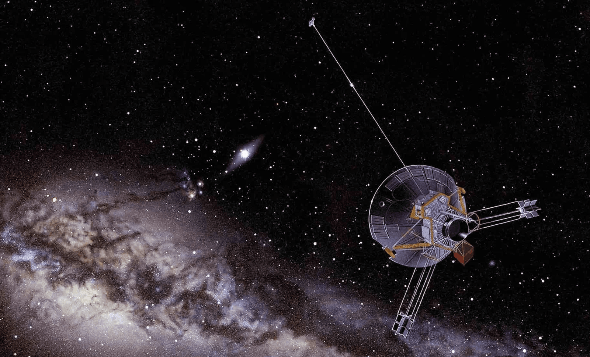
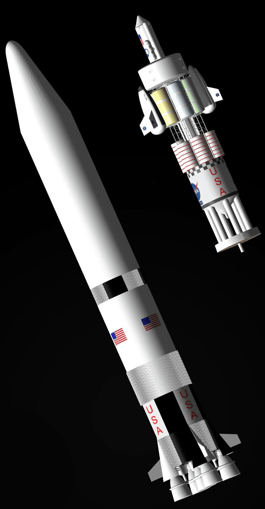
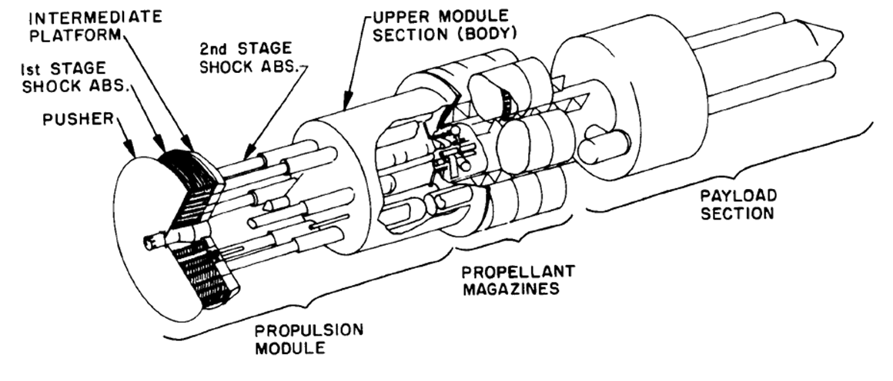
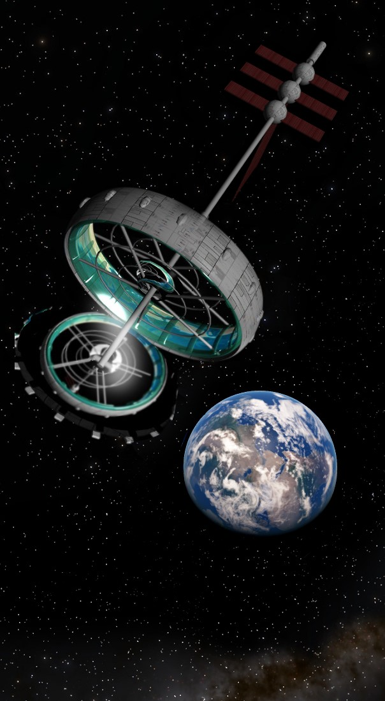
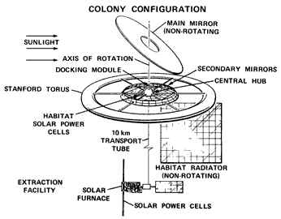
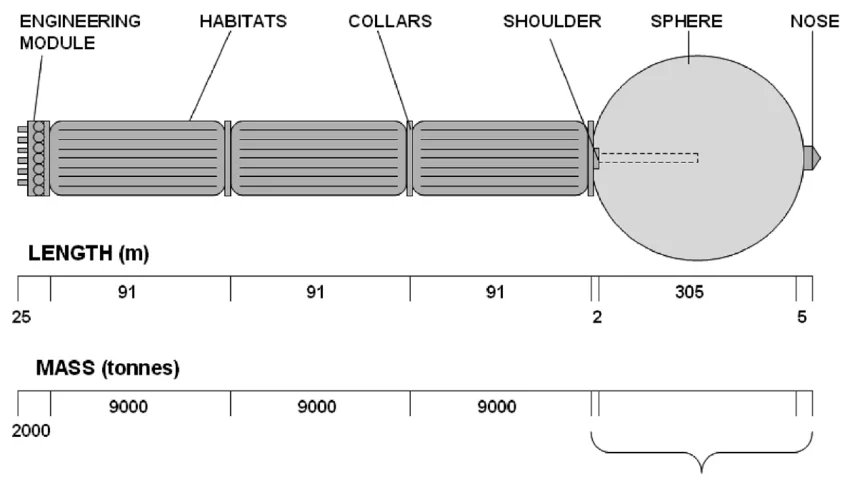

Due to the vast distances between the Solar System and nearby stars, interstellar travel is not feasible with current propulsion technologies. To travel between stars within a reasonable period of time (decades or centuries), an interstellar spacecraft would need to reach a significant fraction of the speed of light. This would require enormous amounts of energy. Furthermore, communication with such a spacecraft would be subject to delays of several years due to the speed of light.

INTERSTELLAR TRAVEL
CHALLENGES TO OVERCOME

Distance in AU means Astronomical Units (the distance between Earth and the Sun), and light travel time is how long an object traveling at the speed of light would take to reach its destination.
| Object | Distance (AU) | Light Travel Time |
|---|---|---|
| Moon | 0.0026 | 1.3 seconds |
| Sun | 1 | 8 minutes |
| Venus (closest planet) | 0.28 | 2.4 minutes |
| Neptune (farthest planet) | 29.8 | 4.1 hours |
| Voyager 2 | 136.1 | 18.9 hours |
| Voyager 1 | 163.0 | 23.5 hours |
| Proxima Centauri (closest star) | 268,332 | 4.24 years |
However, scientists and enthusiasts have developed theories and designs that attempt to overcome these challenges and make interstellar travel a reality.
PROPOSED METHODS

Rendering of a Saturn V rocket modified to carry Orion.
PROJECT ORION
Project Orion was a study conducted during the 1950s and 1960s by the United States Air Force, DARPA, and NASA to investigate the feasibility of a nuclear pulse-propulsion spacecraft, which would be propelled directly by a series of atomic explosions behind the spacecraft.
The project was primarily motivated by the United States government, which viewed Project Orion as a way to transport nuclear weapons into space and deploy them easily, gaining an advantage over the Soviets. The project was abandoned in 1963 due to the easing of tensions between the two countries, the signing of the Partial Test Ban Treaty, and concerns about nuclear fallout that could cause deaths and radiation poisoning among many people.

Basic schematic of the Orion spacecraft and how it works.

Rendering of a Stanford Torus space settlement near Earth.
STANFORD TORUS
The Stanford Torus is a NASA-proposed space settlement designed to accommodate 10,000 permanent residents. It is a type of rotating wheel-shaped space station, consisting of a ring approximately 1.8 km in diameter, whose rotation provides about 1.0 g of artificial gravity. Similar to an O'Neill Cylinder, it consists of a torus, or doughnut-shaped ring, that rotates once per minute to provide between 0.9 g and 1.0 g of artificial gravity inside the outer ring through centrifugal force. Sunlight is directed into the interior of the torus by a system of mirrors, including a large, stationary primary solar mirror. The ring is connected to a hub by several "spokes," which serve as passageways for people and materials traveling to and from the hub. Since the hub is located along the station's axis of rotation, it experiences the least artificial gravity and is the easiest place for spacecraft to dock. Zero-gravity industrial activities take place in a non-rotating module attached to the hub's axis. This project could also accommodate many people on a colonization or tourism mission, functioning as a space resort. However, like the O'Neill Cylinder, it has never progressed beyond the design stage.

Basic schematic of a Stanford Torus space settlement.
Sci-fi artwork of an Enzmann spacecraft near Jupiter (there are not many photographs or renderings of this spacecraft).
ENZMANN STARSHIP
These are concepts for a crewed interstellar spacecraft created by Dr. Robert Enzmann. In the original design proposed in 1964, a three-million-ton sphere of frozen deuterium would power nuclear fusion rocket engines housed in a cylindrical section behind the sphere, along with the crew's living quarters. The frozen deuterium sphere would fuel thermonuclear-powered pulse propulsion units, similar to the engines proposed for Project Orion. The spacecraft would be assembled in Earth orbit as part of a larger project preceded by interstellar probes and telescopic observations of target star systems. The rest of the spacecraft would be attached behind the sphere, which would function as a seamless metal fuel tank. The proposed construction method involved expanding a plastic balloon in space and coating it with metal. The project never received government consideration and remains on paper.

Basic schematic of an Enzmann spacecraft.
Several other designs involve antimatter, black holes, and the curvature of spacetime, with these three being among the best-known concepts.
Perhaps in the future, we will have companies and safe propulsion methods capable of taking us to places we can currently only imagine. This is what the Applications section will explore.